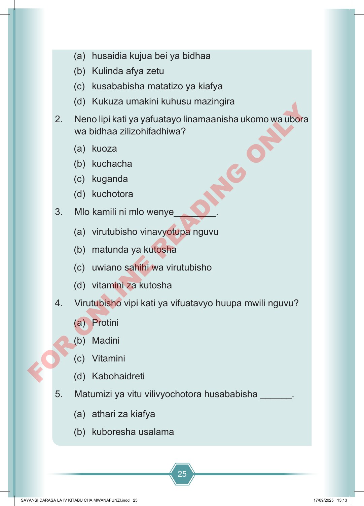

25 (a) husaidia kujua bei ya bidhaa (b) Kulinda afya zetu (c) kusababisha matatizo ya kiafya (d) Kukuza umakini kuhusu mazingira 2. Neno lipi kati ya yafuatayo linamaanisha ukomo wa ubora wa bidhaa zilizohifadhiwa? (a) kuoza (b) kuchacha (c) kuganda (d) kuchotora 3. Mlo kamili ni mlo wenye________. (a) virutubisho vinavyotupa nguvu (b) matunda ya kutosha (c) uwiano sahihi wa virutubisho (d) vitamini za kutosha 4. Virutubisho vipi kati ya vifuatavyo huupa mwili nguvu? (a) Protini (b) Madini (c) Vitamini (d) Kabohaidreti 5. Matumizi ya vitu vilivyochotora husababisha ______. (a) athari za kiafya (b) kuboresha usalama SAYANSI DARASA LA IV KITABU CHA MWANAFUNZI.indd 25 SAYANSI DARASA LA IV KITABU CHA MWANAFUNZI.indd 25 17/09/2025 13:13 17/09/2025 13:13 F O R O N L I N E R E A D I N G O N L Y